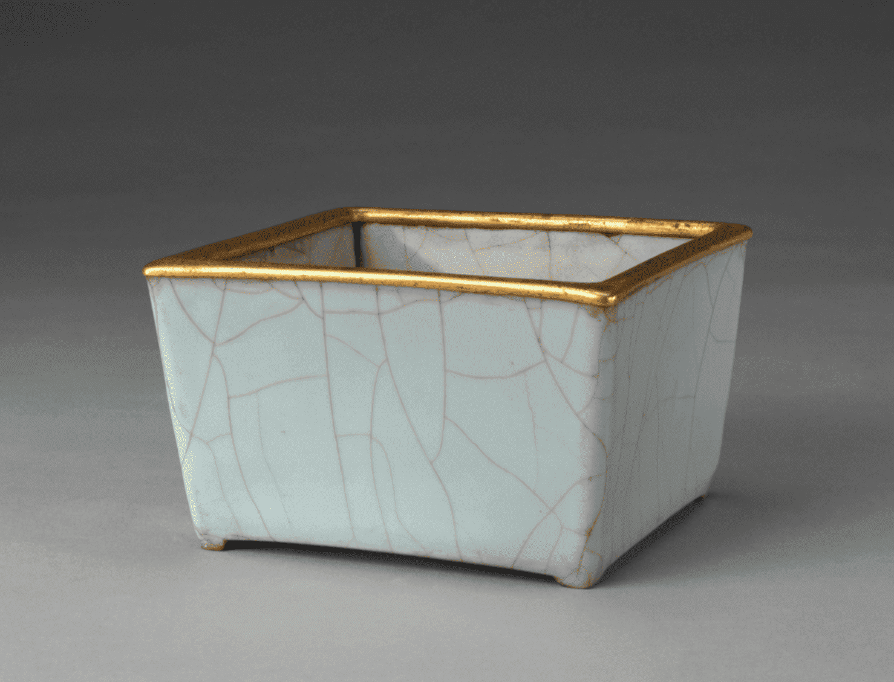
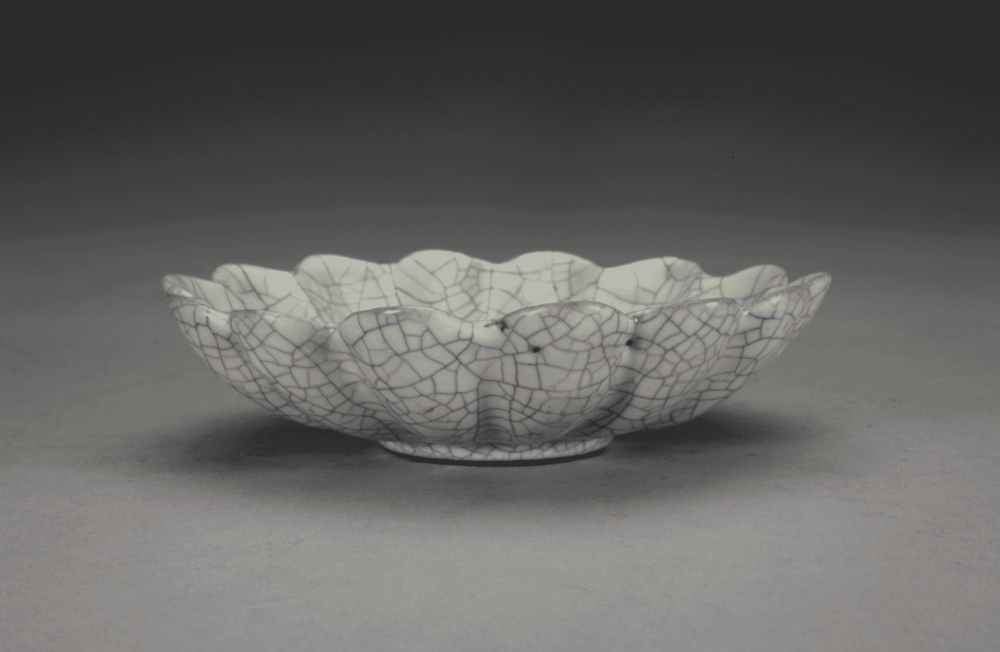

官窑：是在汝窑的影响下产生的青瓷，北宋窑址于今河南开封。官窑从北宋末年宋徽宗时期开始烧造，一直延续至南宋，南宋窑址在今杭州 釉色追求玉器效果的青色，以月色、粉青、大绿三色最为流行,胎色呈灰黑或深黑色，因口缘釉薄处露灰或灰紫色、而底部刮釉露胎呈黑褐， 所以也称“紫口铁足,器型主要模仿青铜器的鼎、尊、炉、触、瓶盘等。
-
官窑青釉小水丞 -
官窑青釉菱花式洗 -
官窑青釉弦纹瓶 -
官窑青釉盏托 -

官窑青釉方花盆
哥窑：在今浙江龙泉，瓷胎呈黑褐色，器皿边缘有褐色的边，称为“紫口铁足”，色调丰富多彩，有粉青、米黄等; 瓷胎为黑色，釉色以青灰为主，釉面有大大小小不规则的开裂纹片,形成鱼子纹、蟹爪纹、百圾碎等。 小纹片纹理呈金黄色、大纹片纹理呈铁黑色，故有“金丝铁线”一说；器形主要以盘、碗、瓶等为主，风格古朴典雅。
-

哥窑青灰釉菊瓣式盘 -

哥窑青灰釉葵口碗 -
哥窑青釉八方杯 -
哥窑青釉双螭耳炉 -

哥窑青釉洗